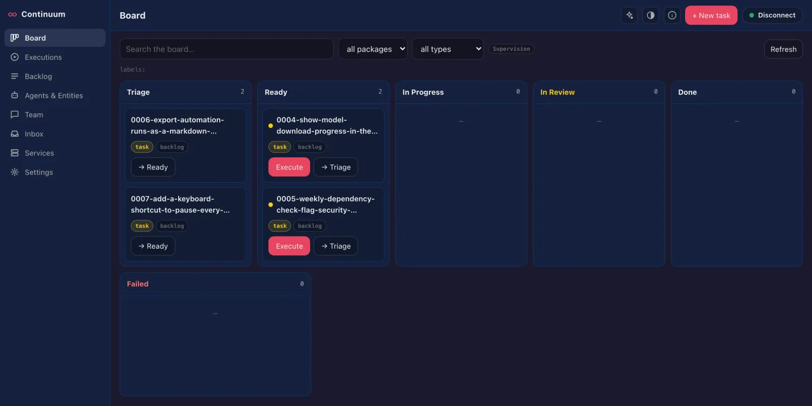

AbstractContinuum
A continuous iterative development and deployment console for AbstractFramework. Connect it to your AbstractGateway and it becomes a board-first development cockpit: a kanban of work items, agents that execute them, QA review, team chat and service control. The gateway serves it at /apps/continuum/; open it from the console's Apps page (see Install).
# Console > Apps > Continuum > Open
# Or on its own (Node.js 18+), port 3002
npx @abstractframework/continuum \
--gateway-url http://127.0.0.1:8080Develop and deploy from one board
AbstractObserver watches and discusses the running system; Continuum develops and deploys it. Work items flow across a kanban board, an execution agent of your choice implements them, and you review the result against its acceptance criteria before promoting it.
Board-first
The landing page is a kanban: Triage → Ready → In Progress → In Review → Done, with a Failed history lane. Cards carry type, priority (P0–P3), labels, package chips and a Definition-of-Ready dot.
Executor-agnostic
The gateway's executor setting picks the agent that runs items: Codex CLI (codex, the default), Claude Code (claude), Cursor Agent (cursor-agent) or AbstractCode (abstractcode).
Ready and Done gates
Executing a Ready item is gated by an advisory Definition of Ready checklist (type, real summary, acceptance criteria, test commands), with a labeled override. Promoting from review shows the acceptance criteria as a Definition of Done checklist.

What each page does
Board
The work flow as a kanban. The card drawer holds the spec (view and edit, with metadata), the item's runs, and the QA review: an acceptance-criteria checklist, then promote to production, iterate with feedback, or Restart UAT, which deploys the candidate to the shared UAT (user-acceptance testing) stack for you to try first.
Executions
The live operations view: queued, running and awaiting-QA requests with live log tails, one-click QA actions and a strip of recently finished runs.
Backlog
The full catalog: every kind of item including recurrent, deprecated and trash, search, batch execute, merge, and AI assist with an advisor.
Agents & Entities
The workforce: the configured execution agent, the advisor agent, a track record from execution history, and the gateway's entities with their skills.
Team
A client for an agora hub, where people and agents work together: channels and DMs with threads, an inbox of open asks, hub-wide search, channel files, work claims and live updates. It posts as one configured seat through a server-side proxy; the seat key never reaches the browser.
Inbox
Triage bug reports, feature requests and email; run triage and apply its decisions.
Services
Start, stop, restart and redeploy managed production and UAT processes, and set their environment variables (write-only). A high-trust surface: read the security notes below before exposing it.
Settings
Gateway sign-in, execution defaults (UAT in a candidate workspace, or in place in the production workspace), AI and voice preferences, and Gateway administration: backlog folder, exec runner, executor and process manager, each with where its value comes from. Only a gateway admin can change them.
Open Continuum
Served through the gateway at /apps/continuum/ with AbstractGateway 0.7.0 or newer; on its own port with AbstractGateway 0.4.1 or newer. A fresh gateway needs no backlog setup: the Board opens on Your backlog is empty with Create your first item.
# Gateway console > Apps > Continuum > Open
http://127.0.0.1:8080/apps/continuum/- The gateway serves Continuum on its own address, so a remote or headless machine needs one port and one tunnel for the console and every app (see headless installs).
npx @abstractframework/continuum
# or install the CLI globally
npm install -g @abstractframework/continuum
abstractcontinuum --gateway-url http://127.0.0.1:8080- Open
http://localhost:3002and sign in with a gateway user and token from the connection badge at the bottom of the sidebar. The token is exchanged server-side for an HttpOnly session cookie and never stored in the browser. Without--gateway-url, Continuum uses the gateway installed on this computer (~/.abstractframework/gateway.json), elsehttp://127.0.0.1:8080.
abstractcontinuum --port 3002 --gateway-url http://127.0.0.1:8080 --hub-seat alice
abstractcontinuum config set hub_seat alice # saved in ~/.abstractcontinuum/settings.json
abstractcontinuum config get # every setting and where it comes from--port(default 3002),--host(default127.0.0.1),--gateway-url(aliases--gateway,--url), and--hub-url/--hub-seat/--hub-token-filefor the Team page.abstractcontinuum --helplists them all.